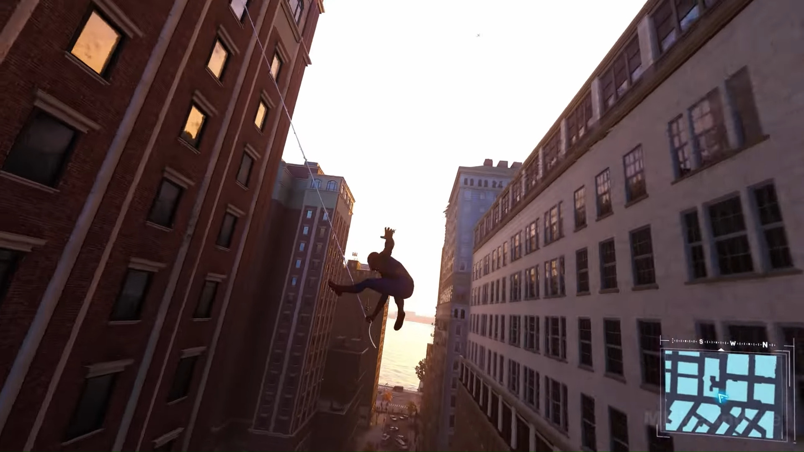
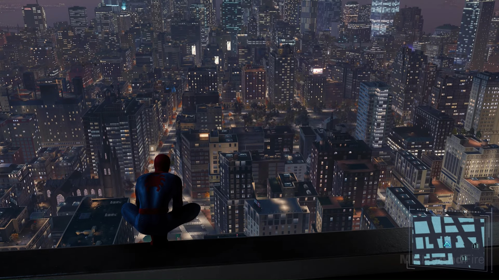

What is Marvel Spider-Man?
Marvel's Spider-Man is a series of superhero action-adventure video games, media franchise, and shared universe developed by Insomniac Games and published by Sony Interactive Entertainment (SIE) for PlayStation consoles and Windows. Based on characters appearing in Marvel Comics publications, the games are inspired by the long-running comic book lore, while additionally deriving from various adaptations in other media. The series principally follows the main protagonists Peter Parker and Miles Morales who fight crime in New York City as dual bearers of the eponymous superhero persona Spider-Men while dealing with the complications of their civilian lives.
Why Do I Like Marvel Spider-Man?
Spider-Man is by far my favorite superhero. So imagine my joy when I found out there was a game coming out on the PS4 about Spider-Man. At the time a new copy of Marvel Spider-Man costed 60 dollars, 60 dollars I did not have. So what did I do? Rented from RedBox (when they still rented out video games) and played it as much as I could. I believe I remember beating it before I had to return it. And when it lowered to 30 dollars, I bought a copy from Gamestop and tried to 100% it. To this day, I believe I still have maybe 10 achievements left to unlock. And the gameplay is phenomenal. The fighting and espeically the web swinging. Sure the fighting is very smooth, but web swinging is what makes a Spider-Man game a Spider-Man game. And Marvel's Spider-Man has the greatest web swinging to date. You can really feel each swing, and the controls are really intuitive. It is the only game I have replayed multiple times to completion.
Spider-Man Gameplay


Should You Play Marvel's Spider-Man?
If you love Spider-Man, play this game! A great story, great gameplay, and two sequels! So I would 100% recommend playing if you can. Available on Steam and PS4 and PS5. Below you will find the Steam page for it.
Still unsure? Here's the trailer!